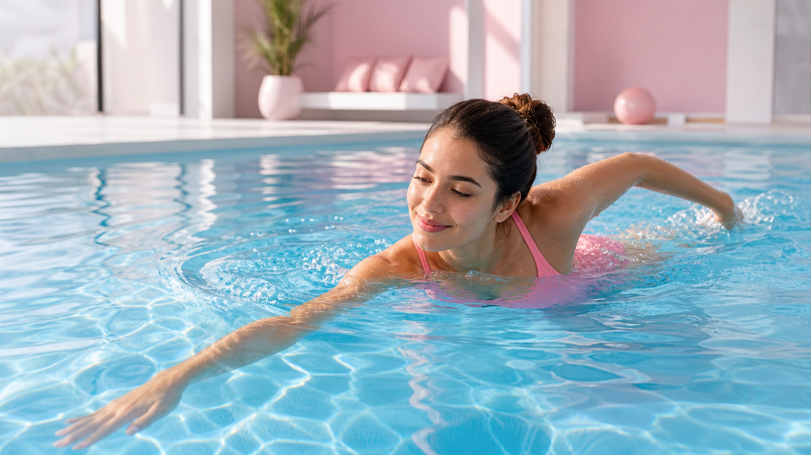

「水泳ってダイエットに本当に効果あるの？」と気になっている方へ。結論からお伝えすると、水泳は全身の筋肉を使う有酸素運動で、体への負担が少なく続けやすいのが特徴です。
この記事では、週3回・4週間を目安にした具体的なメニューや泳ぎ方のポイントを、初心者の方にもわかりやすく解説します。
水泳ダイエットの3つのメリット
① 全身をまんべんなく動かせる
水泳は腕・脚・体幹・背中など、全身の筋肉を同時に使う運動です。特定の部位だけでなく、バランスよく体を動かせるのが魅力です。
② 関節への負担が少ない
水中では体重が約10分の1程度に感じられるといわれています。膝や腰への負担が小さいため、運動が苦手な方や体重が気になる方でも取り組みやすいのがポイントです。
③ 消費カロリーが比較的高い
水の抵抗を受けながら動くため、同じ時間のウォーキングと比べて消費カロリーが高くなる傾向があります。30分のクロールで約200〜300kcal（体重・強度により異なります）を目安にしている方が多いです。
ダイエットに効果的な泳ぎ方ランキング
1位：クロール
全泳法の中で最も消費カロリーが高く、全身の筋肉を使います。30分で約250kcal前後が目安。スピードを上げすぎず、一定のリズムで泳ぐことが長続きのコツです。
2位：平泳ぎ
ゆっくりしたペースでも体幹・脚・腕をしっかり使えます。初心者でも取り組みやすく、息継ぎがしやすいのが特徴。長時間続けやすいので、トータルの消費カロリーを稼ぎやすいです。
3位：背泳ぎ
背中・肩周りの筋肉に効果的。姿勢改善にもつながりやすく、肩こりが気になる方にも向いています。
水中ウォーキングも侮れない
泳ぎが苦手な方は水中ウォーキングから始めましょう。水の抵抗があるため、陸上のウォーキングより筋肉への刺激が大きく、膝への負担も少ないのがメリットです。
週3回・4週間の基本メニュー
以下を目安に、自分のペースで調整してください。
- 🔵 1週目：水中ウォーク20〜25分（週3回）
- 🔵 2週目：平泳ぎ・背泳ぎ中心で30分（週3回）
- 🔵 3週目：クロールを加えて35〜40分（週3回）
- 🔵 4週目：複数の泳ぎを組み合わせて40〜45分（週3回）
無理に距離を伸ばすより、「週3回を4週間続ける」ことを最優先にしましょう。継続が体型変化への近道です。
食事面も気になる方は、1週間の食事＋運動を組み合わせたダイエットプランも参考にしてみてください。
水泳ダイエットを続けるための5つのコツ
① 泳ぐ前後のストレッチを忘れずに
水泳は全身運動なので、肩・股関節・ふくらはぎを中心に5〜10分のストレッチを行いましょう。怪我の予防にもつながります。
② 水分補給をしっかりと
水中にいると汗をかいている感覚が薄れますが、実際には発汗しています。プールに入る前と後に水を飲む習慣をつけましょう。
③ 食後すぐは避ける
食後1〜2時間は消化のために体が働いています。運動は食後2時間以上あけてからが目安です。
④ 泳いだ後の食事に注意
運動後は食欲が増しやすくなります。「頑張ったご褒美」で食べすぎてしまうと効果が出にくくなるため、タンパク質を中心とした食事を意識しましょう。
⑤ 記録をつけてモチベーションを維持
泳いだ日・時間・距離をメモするだけでOK。「週3回できた！」という小さな達成感が継続につながります。
水泳ダイエットの注意点
- ⚠️ 体調が悪い日は無理しない：発熱・生理痛がひどい日は休養を優先
- ⚠️ 塩素による肌・髪のケアを忘れずに：泳いだ後はシャワーで塩素をしっかり流す
- ⚠️ 週3回以上やりすぎない：毎日泳ぐより、休養日を設けて体を回復させる方が効果的
- ⚠️ 持病がある方は医師に相談を：心臓・関節・皮膚疾患がある場合は事前に確認する
水泳と合わせて日常の習慣も見直したい方は、ダイエットを続けるための習慣づくりのヒントもチェックしてみてください。
よくある質問
Q. 泳げなくてもプールでダイエットできますか？
はい、できます。水中ウォーキングだけでも十分な運動になります。水の抵抗があるため、陸上のウォーキングより筋肉への刺激が大きく、膝への負担も少ないのが特徴です。まずは水中ウォークを20〜25分から始めてみましょう。
Q. 水泳ダイエットはどのくらいで効果が出ますか？
個人差はありますが、週3回・30〜45分を4週間継続すると、体の引き締まりや体重の変化を感じ始める方が多いようです。ただし、食事内容も大切なため、運動だけでなく食生活とのバランスを意識することが大切です。
Q. 生理中でも水泳ダイエットを続けていいですか？
タンポンを使用すれば水泳は可能ですが、体調や痛みの度合いによって判断してください。生理痛がひどい日や体がだるい日は無理せず休養を優先しましょう。生理前後の体調管理については、生理前の食欲とダイエットの関係も参考にしてみてください。
まとめ：水泳ダイエットは「週3回・4週間」の継続がカギ
水泳は全身を使える有酸素運動で、関節への負担が少なく続けやすいのが大きな魅力です。
- ✅ 週3回・30〜45分を4週間続けることを目標にする
- ✅ 最初は水中ウォークから始めてOK
- ✅ クロール・平泳ぎを組み合わせると効果的
- ✅ 食事とのバランスも意識する
- ✅ 無理せず、休養日を設けて継続を優先する
「完璧にやろう」と思いすぎず、まずはプールに行く習慣をつけることから始めてみてください。小さな一歩が4週間後の変化につながります。